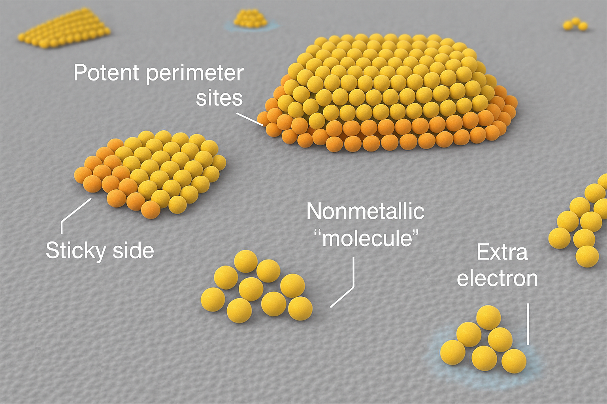
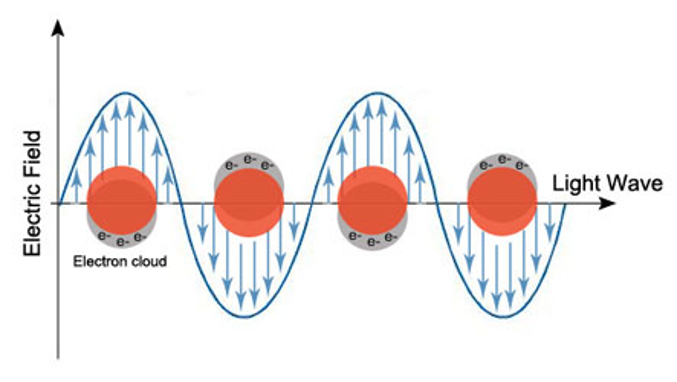
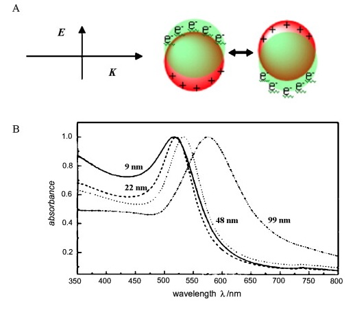
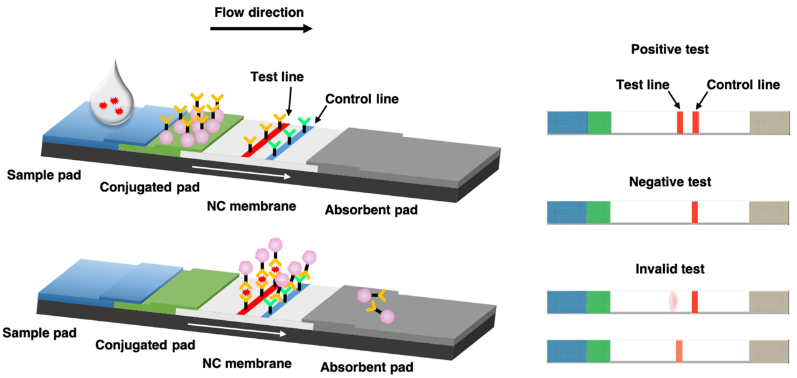

11 Metal Nanoparticles#
11.1 Metallic Bonding**#
Metallic bonds form when valence electrons are shared across many atoms.
Free electrons move within the positive ion lattice, providing cohesion.
Models to describe metallic behavior:
Classical Model: Treats electrons as particles colliding as they move.
Quantum Model: Required to explain some electronic behaviors at the nanoscale.
11.2 Historical Use of Metal Nanoparticles**#
290–350 AD: Early applications of metal nanoparticles.
800 AD: Damascus steel blades contained nanoparticles.
13th–15th Century: Luster pottery used metal nanoparticles for color effects.
Notre Dame Stained Glass: Light scattering by nanoparticles created vibrant colors.
Lycurgus Cup: A Roman artifact whose color changes based on the light source.
11.3 Surface-to-Volume Ratio Effects#
Nanoparticles behave differently from bulk materials due to their high surface area.
A significant fraction of atoms are surface atoms, altering physical properties.
11.3.1 Thermal Properties#
Melting point decreases as particle size decreases.
Atoms become more mobile due to weaker surface binding.
The effect is particularly strong for nanoparticles < 20 nm.
11.3.1.1 Thomson Equation for Melting Point Depression**#
The Thomson equation quantifies how nanoparticle size affects melting point:
where:
\(T_m(D)\) = melting point of the nanoparticle,
\(T_{\text{bulk}}\) = bulk melting point of the material,
\(D\) = diameter of the nanoparticle,
\(C\) = material-dependent constant.
11.3.1.2 Example: Gold Nanoparticles#
For gold, \(T_{\text{bulk}} = 1064^\circ C\) and \(C \approx 3.5\) nm.
For a 5 nm gold nanoparticle:
A 5 nm gold nanoparticle melts at 319°C, much lower than the bulk melting point.
This explains *why nanoparticles behave differently in thermal applications
11.3.2 Cataylsis#

Figure 11.1 The source of enhance catalytic behaviour.
Increased activity comes first from the increased surface area.
Apexes and edges are generally more active
Certain face might be more sticky to molecules and therefore more effective.
Small nanoparticle might have free electrons
Some nanoparticles will be more ‘molecule-like’ and this might be an advantage.
11.3.2.1 Example Problem: Catalytic Activity**#
Problem A bulk platinum (Pt) catalyst has a surface area of 5 m²/g, while Pt nanoparticles have a surface area of 200 m²/g. How much more efficient is the nanoparticle catalyst?
Solution Since catalytic efficiency is proportional to surface area:
Pt nanoparticles are 40 times more efficient than bulk Pt.
This is why nanoparticles are widely used in catalysis, e.g., in fuel cells.
11.3.2.2 Example Problem: Surface-to-Volume Ratio#
**Problem **#
Compare the surface-to-volume ratio of a 10 nm gold nanoparticle to that of a 1 mm gold particle.
Solution#
For a spherical particle, the surface-to-volume ratio is:
For a 10 nm (\(10^{-8}\) m) particle:
For a 1 mm (\(10^{-3}\) m) particle:
The 10 nm particle has a 100,000 times higher surface-to-volume ratio than the 1 mm particle.
This explains why nanoparticles are highly reactive and show melting point depression.
11.4 Optical Properties of Gold Nanoparticles#
The color of gold nanoparticles changes with size due to Surface Plasmon Resonance (SPR) and Light Scattering
Surface Plasmon Resonance (SPR):
Free electrons in the nanoparticle oscillate in response to light.
Different sizes and shapes influence light absorption and scattering.
11.4.1 Localized Surface Plasmon Resonance (LSPR)#
Localized Surface Plasmon Resonance (LSPR) is the collective oscillation of conduction electrons in metallic nanoparticles excited by light. This phenomenon occurs when the frequency of incident photons matches the natural frequency of surface electrons oscillating against the restoring force of positive nuclei (see Figure 11.2)

Fig 11.2 The SPR effect in gold nanoparticles.
11.4.1.1 LSPR Equation#
For small spherical metal nanoparticles (\(R <<\lambda\)) the extinction cross-section, \(C_{\text{ext}}(\lambda)\) is given by:
where \(\epsilon_m\) is the dielectric constant of the medium e.g. water,\(\epsilon\) is the dielectric of the nanoparticle, which is given by, \(\epsilon(\lambda)=\epsilon_r(\lambda)+i\epsilon_i(\lambda)\) where \(\epsilon_r\) and \(\epsilon_i\) are the real and imaginary parts. Also, $\(\epsilon_m=n_m^2\)$
This means that LSPR occurs (resonance) when the real part of the nanoparticle’s dielectric function satisfies:
because \(C_{\text{ext}}\)
11.4.2 Light Scattering#
Blue light (450 nm) is scattered much more than red light (650 nm), making the sky appear blue.
At sunset, light travels through more atmosphere, so blue light is mostly scattered away, leaving red/orange hues.
This phenomenon is explained by Rayleigh scattering, which describes the scattering of light by particles much smaller than the wavelength of light:
The intensity of Rayleigh scattering depends on both the wavelength and the size of the scattering particle:
\(I \propto \frac{D^6}{\lambda^4}\)
where:
\(I\) is the scattering intensity,
\(D\) is the diameter of the particle,
\(\lambda\) is the wavelength of light.
This means that smaller wavelengths (like blue/violet light) are scattered much more than longer wavelengths (like red), and larger particles scatter more intensely than smaller ones.
However:
Although violet light is scattered more than blue, our eyes are less sensitive to violet, and the upper atmosphere absorbs much of it. Thus, the sky appears predominantly blue to human vision.
Examples#
Blue skies: Caused by scattered sunlight, dominated by short-wavelength (blue) light.
Red sunsets: As the Sun nears the horizon, sunlight passes through more air, and only the longer wavelengths (reds and oranges) reach our eyes.
White clouds: Caused by Mie scattering, where the particles (like water droplets) are comparable in size to the wavelength of light, scattering all visible wavelengths nearly equally.
Rayleigh scattering explains why the sky is blue and why sunsets are red.
Scattering intensity increases with smaller wavelengths and larger particle diameters

Figure 11.3 Gold nanoparticle SPR plot (the absorbance versus wavelength).
11.4.3 Applications of LSPR#
Biomedical Imaging: Enhanced contrast in imaging techniques.
Biosensors: LSPR shifts when molecules bind to the nanoparticle surface.
Photothermal Therapy: Gold nanoparticles absorb light and convert it to heat, useful for cancer treatment.
11.4.4 Factors Influencing LSPR#
Form the mathematical model we can see that
Dielectric Environment: Changes in the surrounding medium shift the resonance wavelength.
Other factors:
Nanoparticle Size and Shape: Smaller particles have higher resonance frequencies. Elongated or anisotropic particles (e.g., nanorods) shift LSPR to longer wavelengths (red-shift).
Composition of Nanoparticles: Gold and silver are commonly used due to their strong plasmonic properties.
Key point The size and shape of the gold strongly effects the wavelength that the resonace occurs. The LSPR peak can be tuned into the near-infrared (NIR) region (700-1200 nm) by:
Changing Shape: Nanorods, nanoshells, and nanostars exhibit elongated structures that shift resonance towards NIR. Of particular not nanorods provide very strong absorption in the NIR and the aspect ratio (AR), (\(AR=\frac{\text{length}}{\text{diameter}}\))
Using Core-Shell Structures: Coating gold nanoparticles with a dielectric material can further shift the plasmonic resonance.
11.4.4.1 Importance of NIR absorption for Photothermal Therapy#
Biological Tissue Transparency: NIR light penetrates biological tissues more deeply (several millimeters to centimeters) with minimal absorption by water and hemoglobin.
Efficient Heat Generation: When NIR light excites the LSPR of gold nanoparticles, the absorbed energy is converted into heat, leading to localised temperature increases.
Selective Cancer Therapy: Functionalised nanoparticles selectively bind to cancer cells, allowing for targeted hyperthermia that destroys cancer cells while sparing healthy tissue.
Minimal Invasiveness: Enables non-invasive or minimally invasive treatments, reducing the need for surgery.
11.5 Biosensing: Used in lateral flow assays (e.g., pregnancy tests using Au nanoparticles).#
11.5.1 How Lateral Flow Assays Work#
Lateral flow assays (LFAs) are simple diagnostic devices used to detect the presence of a target analyte in a liquid sample. They operate based on capillary action, where the sample flows through a test strip consisting of:
Sample Pad: Absorbs and distributes the sample evenly.
Conjugate Pad: Contains gold nanoparticles conjugated with antibodies that bind to the target analyte.
Nitrocellulose Membrane: Features two lines: a test line (with immobilized antibodies specific to the analyte) and a control line (ensuring the test is functioning properly).
Absorbent Pad: Wicks away excess fluid.
Figure 11.4. A lateral flow device for a prengancy test. The pink lines are created by SPR and scattering effects of gold nanoparticles which have antibodies attached to them.
Detection Mechanism When the sample is applied, it flows through the strip. If the target analyte is present, it binds to the gold nanoparticle-antibody conjugates. This complex then moves along the membrane and binds to the test line, producing a visible color due to the plasmonic properties of the gold nanoparticles. A second control line captures unbound conjugates to validate the test.

Figure 11.5 The lateral flow device mechanism. Generally they are limited by the specificity and affinity of the antibodies along with the concentration of analyte that needs to be detected.
11.5.2 Example Applications#
Pregnancy tests (detecting human chorionic gonadotropin, hCG)
Infectious disease diagnostics (COVID-19, flu)
Non-infectious diseases such as cancer (using as part of many tests)
Drug screening tests
11.6 Key Takeaways#
Surface-to-Volume Ratio: Nanoparticles have higher reactivity due to their high surface area.
Catalytic Efficiency: Nanoparticles are far more effective catalysts than bulk materials.
Melting Point Depression: Smaller nanoparticles melt at much lower temperatures than bulk materials.
Localised Surface Plasmon Resonance (LSPR): Gold nanoparticles change color due to light interaction.
Rayleigh Scattering: Explains why blue light scatters more than red, making the sky blue and gold nanoparticles red.
Photothermal Therapy: Gold nanoparticles can be used for targeted cancer therapy.
Catalysis and Energy Applications: Plasmonic nanoparticles enhance catalytic reactions and are used in solar energy conversion.